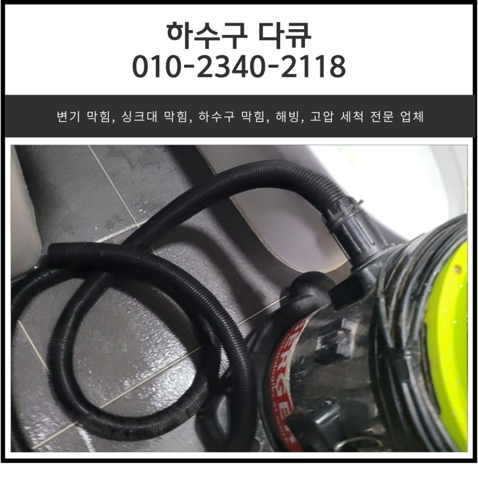
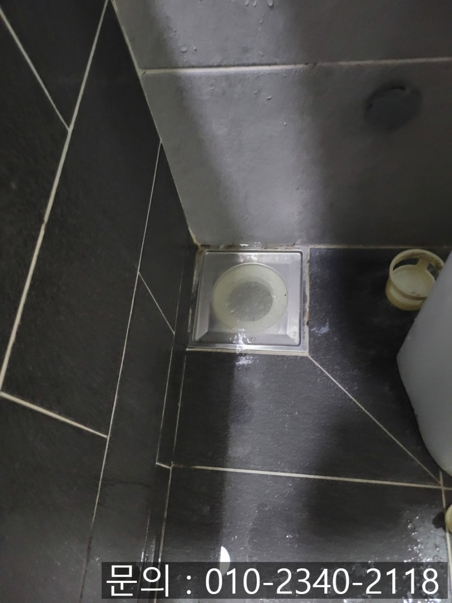
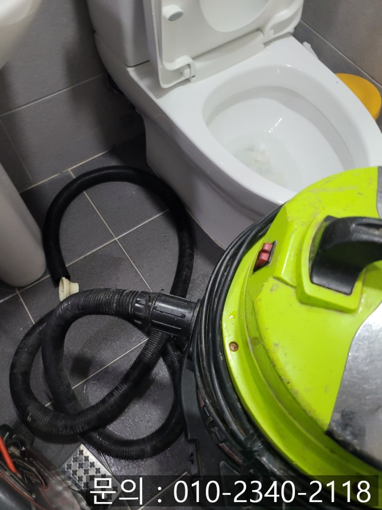
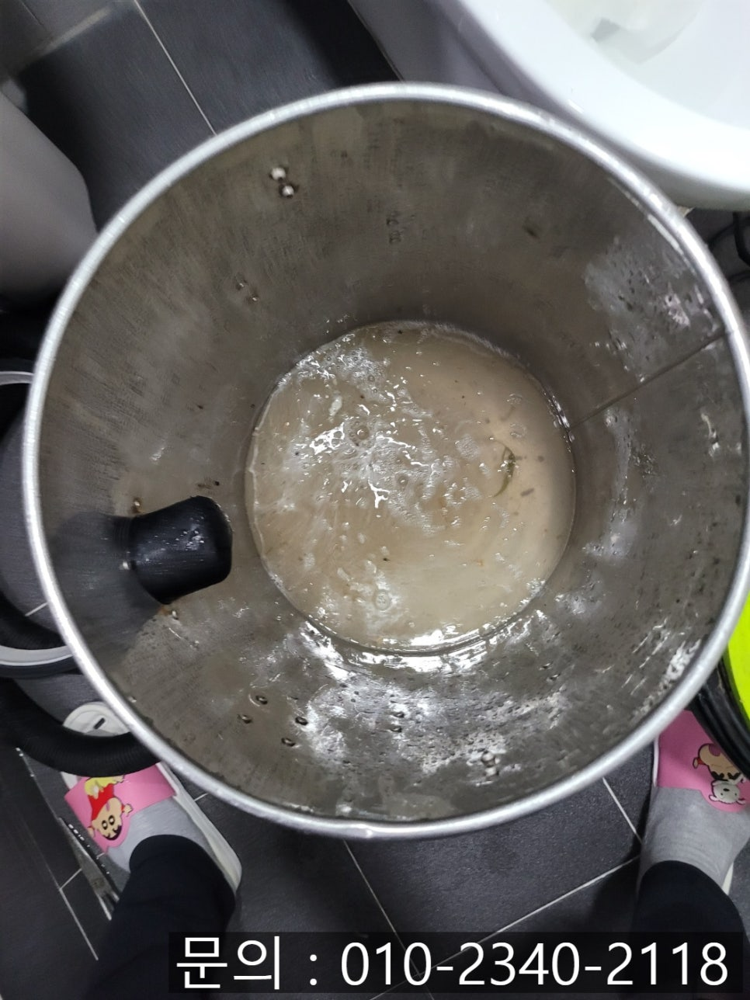
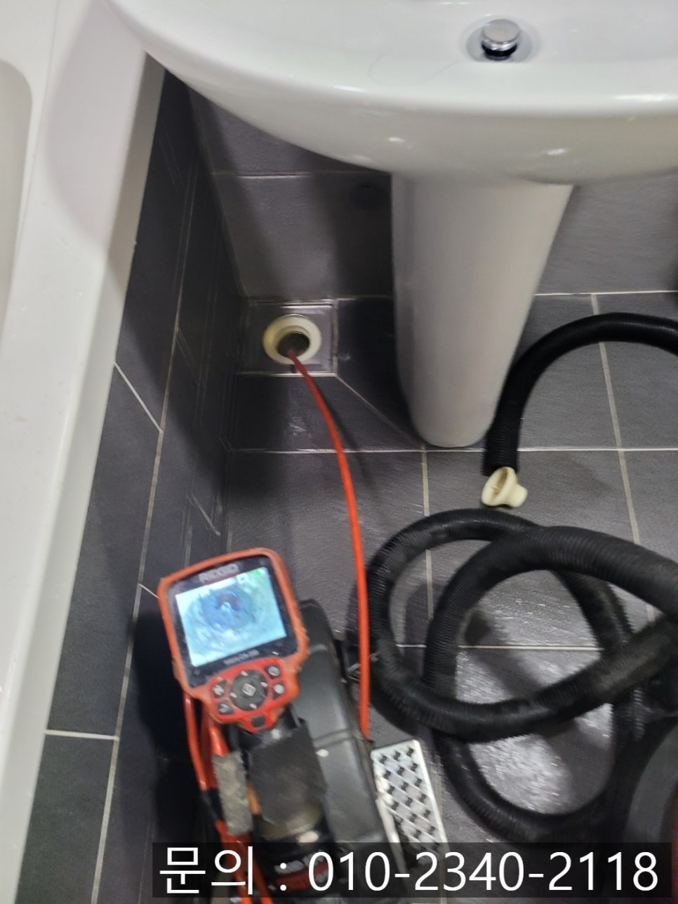
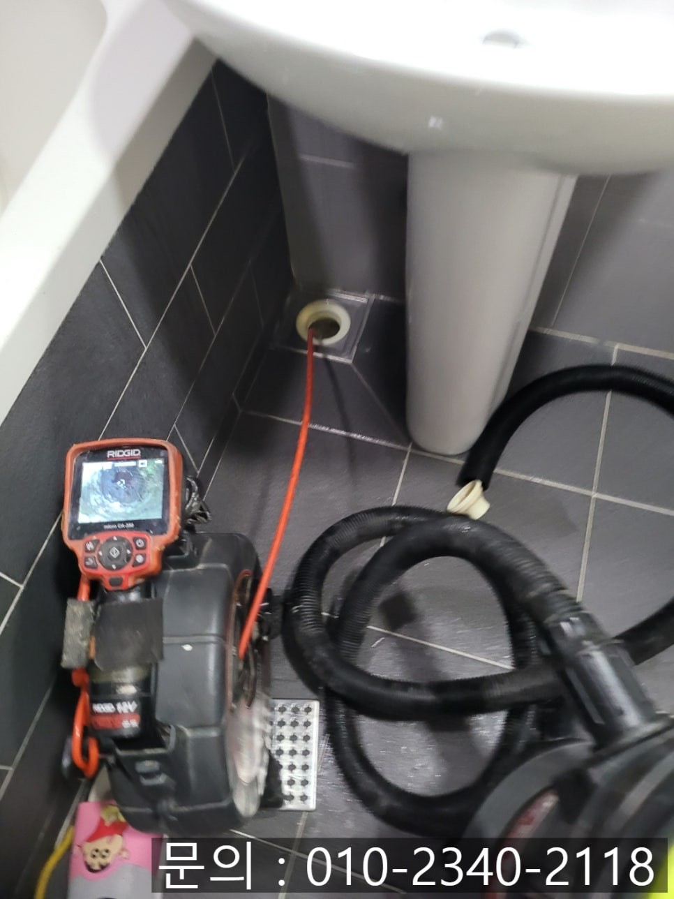
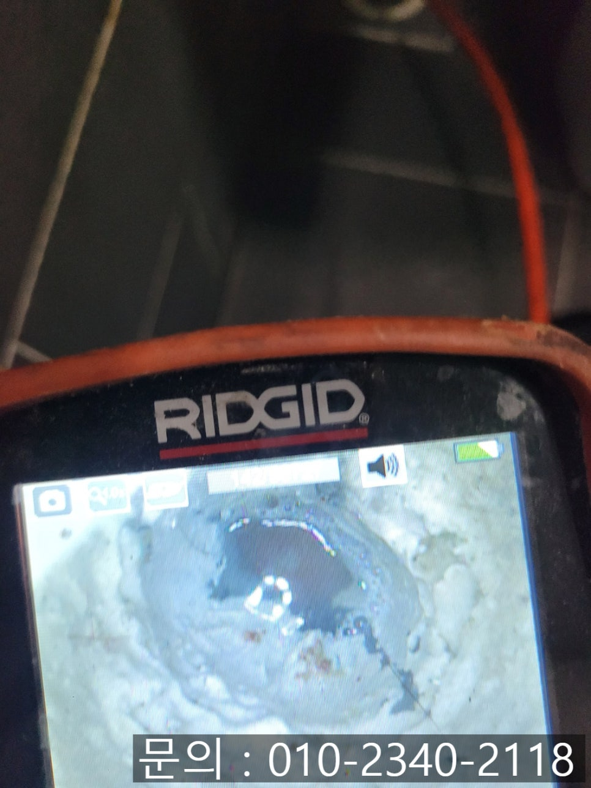

🏠 오목천동 하수구 막힘 수원 호매실동 아파트 화장실 바닥 역류 청소 전문 설비 업체
수원 싱크대막힘 전문 시공 후기

📋 작업 개요
- 위치: 수원
- 서비스 유형: 싱크대막힘, 변기막힘, 하수구막힘, 배관막힘, 누수수리, 역류해결, 뚫는업체, 배관청소
- 작업 일시: 2025. 6. 20. 15:49
- 업체명: 하수구수사대 (010-5615-2118)
🔍 문제 상황
안녕하세요.
오목천동 하수구 막힘, 수원 호매실동 아파트 화장실 바닥 역류 청소 전문 설비 업체 하수구 다큐입니다.
아파트에 거주하다 보면 예상치 못하게 오목천동 하수구 막힘 문제로 불편을 겪는 일이 종종 발생하게 됩니다.
주방의 싱크대, 세탁실 바닥, 화장실 변기 등 다양한 하수구 배관 중에서도 화장실 바닥 역류는 여러 가지 불편함을 초래하게 되는데요.
우선 화장실 바닥에서 역류하다 보니 변기나 세면대 등을 이용하러 들어가기도 불편하고, 더 나아가 그대로 방치하게 되면 아래층 화장실 천장으로 누수가 발생할 수 있어 문제가 발생하게 되면 빠르게 해결하셔야 합니다.
오늘 의뢰받은 오목천동 하수구 막힘은 900여 세대가 거주하는 10년 정도 된 아파트에요.

🔎 원인 분석
💡 전문가 진단: 정밀 진단 장비를 사용하여 슬러지의 고착 여부를 판명하고 타격/세척 작업을 실시했습니다.
거실에 위치한 화장실 바닥에서 오수가 역류해 올라온다고 연락을 주셨어요.
물을 많이 사용해서 일시적으로 막힌 거라 생각하셔서 뚫어 뻥을 이용해 직접 뚫어보기 위해 시도해 보셨지만 해결되지 않아 하수구 다큐로 연락을 주셨습니다.
우선 강한 흡입력을 자랑하는 석션을 사용해 역류한 오수를 빨아들이는 작업을 진행해 줬습니다.
심각하게 막히지 않았을 경우에는 이 정도 이물질이 제거되면 뚫리는 경우도 종종 있는데요.
정확한 원인은 내시경 카메라를 진입시켜 배관의 내부를 점검해 보기로 했습니다.
배관 전용 내시경 카메라는 사람의 눈으로 직접 볼 수 내부로 진입해 막힘의 원인을 파악하는데 꼭 필요한 장비에요.

🔧 작업 과정
내시경 카메라가 배관 내부로 진입하자 여전히 많은 양의 기름 슬러지와 석회가 쌓여 있는 것을 확인할 수 있었습니다.
석회를 부드럽게 해주는 약품을 부어놓고 시간이 흐른 다음 플렉스 샤프트 장비를 사용해 이물질을 제거하는 작업을 진행했어요.
배관에 쌓여있던 이물질은 일부 제거되었지만 여전히 물이 시원하게 내려가지 않고 이상함을 감지했습니다.
수원 호매실동 아파트 화장실 바닥 역류 청소 전문 설비 업체 하수구 다큐는 아래층으로 내려가 반대쪽에서 체크해 보기로 했어요.
아래층 천장을 오픈한 다음 배관을 살펴보자 P 트랩을 확인할 수 있었습니다.
아무래도 P 트랩 때문에 장비가 제대로 진입되지 않아 잔여 이물질이 많이 남아있는 상태로, 아래층 천장에서 추가로 작업을 진행했습니다.
위층에서 이미 약품을 부은 상태이다 보니 바로 작업을 진행할 수 있었어요.
플렉스 샤프트 장비를 사용해 남아있는 이물질을 잘게 파쇄한 다음 제거된 이물질입니다.
작업을 의뢰해 주신 고객님 댁에서 인테리어 하시고 입주하셨는데요.
아무래도 인테리어 과정에서 시멘트가 들어가 배관을 막았던 것 같습니다.


✅ 작업 완료
모든 배관 청소를 마치고 다시 위층 고객님 댁으로 올라가 많은 양의 물을 흘려보내면서 다른 문제는 없는지 테스트까지 진행한 뒤 장비를 챙겨 철수할 수 있었습니다.
지금 하수구 막힘으로 고민하고 계신다면 수원 호매실동 아파트 화장실 바닥 역류 청소 전문 설비 업체 하수구 다큐와 함께 해결해보세요.
경기도 수원시 권선구 매송고색로533번길 7 상가동 B층 01호 298




⚠️ 베란다 누수 및 방수 관리 방법
- ✅ 비가 많이 올 때 창틀 주변이나 아래층 천장에 얼룩이 생기는지 정기적으로 확인해 보세요.
- ✅ 우수관 주변 실리콘 마감이 들뜨거나 깨진 틈새가 있는지 손상 여부를 수시로 체크하세요.
- ✅ 베란다 바닥 타일의 줄눈(메지)이 소실되면 그 틈으로 물이 침투하여 누수가 유발됩니다.
- ✅ 누수 의심 증상 발견 시 방치하면 아래층 손실이 커지므로 즉시 전문가의 진단을 받으십시오.
💡 핵심 정리
- 확실한 장비 작업(내시경 점검 및 샤프트 스케일링)으로 원인을 뿌리 뽑습니다.
- 작업 후 1년 이내에 동일한 부위 재발 시 100% 무상 A/S 서비스를 보장합니다.
- 서울 · 경기 · 인천 전 지역에 24시간 언제든 긴급 출동할 수 있도록 항시 대기 중입니다.
❓ 자주 묻는 질문 (FAQ)
🚨 수원 싱크대막힘 문제로 고민이신가요?
정확한 원인 진단과 확실한 시공으로 재발 없는 해결을 약속드립니다.
24시간 긴급 출동 | 서울 · 경기 · 인천 전지역 | 1년 내 재발 시 무상 A/S